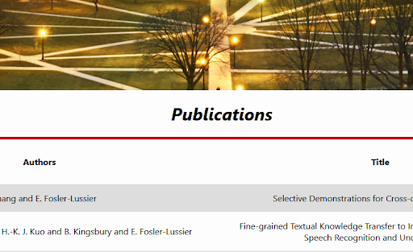

My web development team and I were tasked with the redesigning of staff member Eric Fossler-Luciers
faculty
page. This was done utilizing scriplets of embedded ruby generated and interpreted by the Middleman gem.
The
code scrapes the information off of the provided website, and redisplays it in a more stylized, cohesive
design. This project was an assignment to help improve our Ruby, CSS, and HTML design.